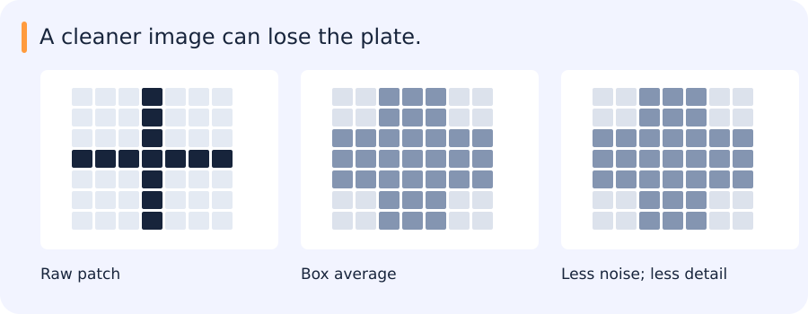

A cleaner image can lose the plate.
One bright pixel may be noise. A three-pixel stroke may be a character. Smoothing treats both as high-frequency structure.

| Notice | Interpret | Check |
|---|---|---|
| Single bright pixel | Average over neighbours | Check OCR, not just appearance |
Reveal the catch
The prettiest preprocessing is not always the best input to the next model.
In code: One bright pixel becomes three weaker pixels
import numpy as np
signal = np.array([0, 0, 0, 9, 0, 0, 0], dtype=float)
kernel = np.ones(3) / 3
smoothed = np.convolve(signal, kernel, mode="same")
print(smoothed.tolist())Expected output:
[0.0, 0.0, 3.0, 3.0, 3.0, 0.0, 0.0]This is a 1D analogue of image smoothing: the peak shrinks and spreads. Whether that peak is noise or useful detail depends on the task.
Try it in 60 seconds: Blur a plate with two kernel sizes. Inspect strokes before comparing recognition.
Read for understanding, not page completion. Skip what you can already explain.
Jump to a concept
An image is a sampled signal
An image samples a scene after optics, sensor response and processing. Resolution, dynamic range and noise affect what can be recovered. Spatial filters combine nearby samples. In one dimension, convolution is (f*g)[n] = sum_k f[k] g[n-k]; correlation uses the unflipped relative kernel. They agree for a symmetric real kernel, but derivative signs can differ for an asymmetric one. An impulse kernel reproduces or shifts a signal depending on its location. Linearity follows by distributing the sum over a weighted combination of inputs.
Smoothing and separability
A normalized box filter averages a neighborhood. A Gaussian gives more weight to nearby pixels and controls smoothing with sigma. Increasing sigma reduces fine detail and suppresses high-frequency noise. Kernel support must be large enough to represent the selected Gaussian; truncation and renormalization affect its behavior. Specify boundary padding: zero padding can create a dark edge, reflection synthesizes different neighboring values and valid filtering shrinks the result.
A separable two-dimensional kernel is an outer product of two one-dimensional kernels. Apply a horizontal filter and then a vertical one. A K-by-K filter then needs roughly 2K rather than K squared operations per pixel, ignoring constants and memory costs. Exact separability means rank one; the leading singular vectors give a rank-one approximation when it is not exact. A Gaussian is separable. Normalizing a kernel to sum to one preserves constant regions away from boundaries.
Template matching and edge detection
Correlation can search for a known template, but raw intensity similarity changes with illumination. Zero-mean normalized correlation removes additive offsets and positive multiplicative contrast changes when both patches have nonzero variance. It does not create invariance to perspective, scale or occlusion. Large windows collect evidence but may mix multiple surfaces; small windows localize precisely but are noisy and ambiguous.
A derivative estimates local intensity change. Sobel combines differentiation with smoothing in the perpendicular direction. Differentiating a smoothed image reduces noise amplification. Gradient magnitude indicates edge strength; gradient direction indicates the local normal. Canny adds directional nonmaximum suppression and hysteresis: strong responses seed edges and connected weaker responses may survive. The thresholds affect fragmentation and false edges, while smoothing affects localization and sensitivity to noise.
Fourier intuition and implementation
The Fourier transform represents a signal as a weighted combination of frequencies. A complex coefficient has magnitude and phase. Low frequencies capture slowly varying structure; high frequencies capture fast changes, including both edges and noise. The DC coefficient represents the sum of samples under the common unnormalized forward transform. A display using fftshift moves DC to the center; the transform itself need not store it there.
Convolution in space corresponds to multiplication in frequency. A discrete FFT directly implements circular convolution; use appropriate padding and cropping for linear convolution. A low-pass mask suppresses high frequencies; a high-pass mask suppresses low ones. A hard frequency cutoff creates ringing because its spatial response is extended and oscillatory. Smooth cutoffs reduce that artifact. Phase often carries strong information about spatial structure, but magnitude also matters: “phase alone contains the image” is an overstatement.
Pyramids and sampling
Downsampling without limiting frequencies can cause aliasing: different signals become indistinguishable at the lower sampling rate. A Gaussian pyramid smooths and downsamples repeatedly. A Laplacian pyramid stores differences between a level and an expanded coarse estimate; together with the coarse residual it supports reconstruction and multiscale blending. Upsampling creates more samples, not new measured detail. Bilinear interpolation is useful for continuous intensities; nearest-neighbor is often appropriate for categorical segmentation labels.
Apply and explain
On one image, compare box and Gaussian smoothing, Sobel and Canny, and smooth versus hard frequency cutoffs. Keep pixel scaling and display limits fixed. Test an impulse and a constant image before interpreting a natural image. In the LPR task, connect each preprocessing operation to the plate geometry and recognition result. A cleaner-looking edge map can still reduce downstream accuracy.
Original source references and provenance
Original teaching text covering the cited topics, not a verbatim mirror. These references are provenance; no external reading is required to use this chapter.